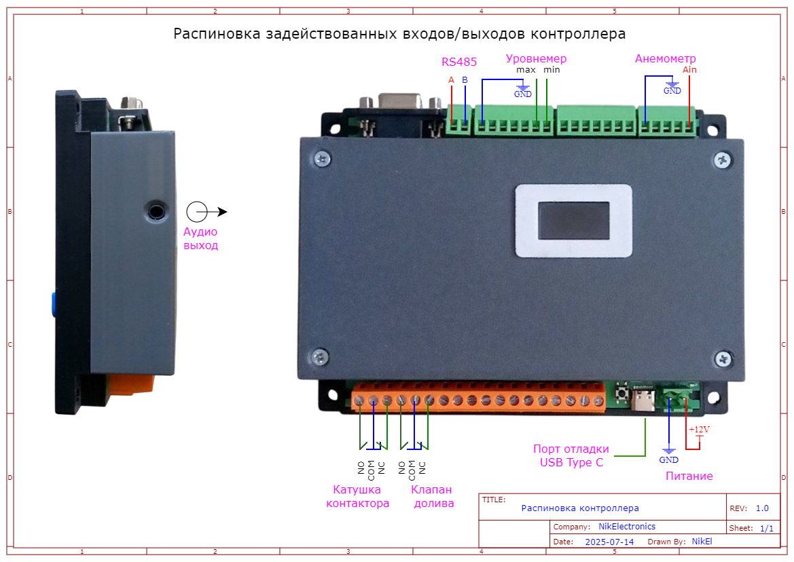

← Вернуться к инструкции
Распиновка контроллера "МОЙ ФОНТАН"

Рис. 1 - Распиновка и общий вид контроллера
Контакты подключения внешних устройств:
RS485
- контакты для подключения частотных преобразователей и модулей подсветки.
Уровнемер
- контакты подключения уровнемера(верхний и нмжний уровень)
Анемометр
- контакты подключения датчика ветра.
Катушка контактора
- выходы реле для управления контактором включения.
Клапан долива
- выходы реле для управления клапаном долива воды
Питание
- контакты подключения питания контроллера (НЕ НАРУШАТЬ ПОЛЯРНОСТЬ!)
Порт отладки
- порт для отладки в программе "Мой фонтан PC"